Upgrading to Windows 11
The time to transition from Windows 10 to Windows 11 is here.
Introduction
Windows 11 was released on 05/10/2021, making it three years old this year, if you are running Windows 10 or older you need to upgrade to ensure that your PC remains updated and compatible with the latest software.
Windows 10 will stop receiving security updates in 2025, this means that you have just under a year to upgrade or risk becoming vulnerable to cyber-attacks.
Currently you can upgrade from Windows 10 to Windows 11 for free *expected to end in September 2024*, the upgrade process is really simple and straight forward provided that you have a supported PC, if your PC is not supported you can still upgrade but it will be a bit more complicated.
I advise that you back-up your computer before proceeding, a guide on this will be available soon.
How do I tell if my PC is supported?
It is really simple to tell if your computer is supported, you need to use free Microsoft PC Health Check App as it is the official way to tell if your computer is supported. You can the PC Health Check App below.
Download PC Health CheckerHow to use the PC Health Check
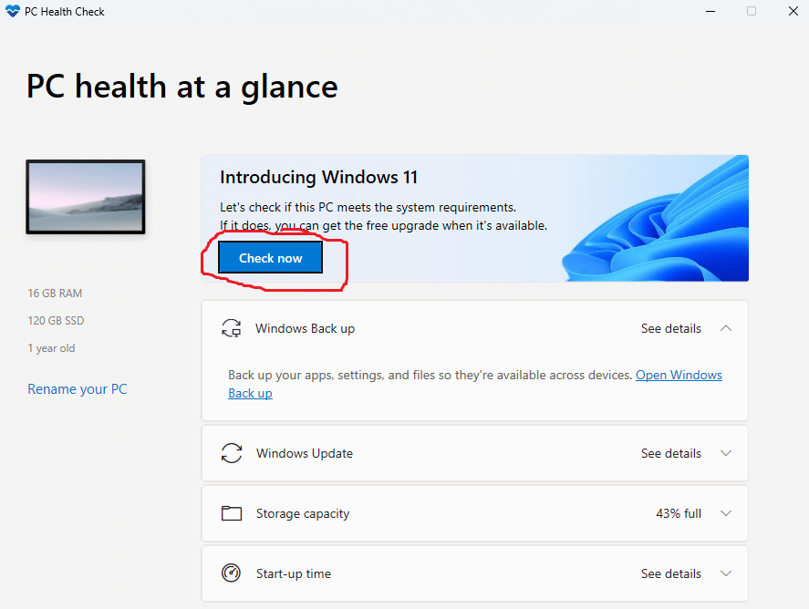The PC Health Check App is really easy to use, once you have downloaded and installed it you should see a screen like the one pictured above, you just need to click on the 'Check Now' button and it will tell you if you PC is ready for Windows 11 or not.
If you see a message telling you that "This PC meets Windows 11 requirements" you can skip the next steps and jump straight to Downloading and Installing Windows 11.
If you see anything else, this means that your PC is not officially supported but you can probably still run it anyway, read the 'What to do if my PC is unsupported?' section for more information.
What to do if my PC is unsupported?
If your PC is not officially supported for Windows 11 you might still be able to run it without any issues on your existing PC, to determine if your PC is capable of running Windows 11 you need to find out if it supports a feature called POPCNT as this is a new hardware requirement that Windows 11 has introduced, most computers newer than 2011 support this feature.
I have created a special program called 'check_popcnt.exe' that can detect if your computer supports this feature, you can download it from via the link below.
WARNING: The download is currently reporting as malicious; I would advise against downloading at the moment if you are using Windows Defender or McAfee as this appear to be causing a false detection.
Download check_popcnt.exeNotice: You might find that the download is blocked, this is because it is a .exe program which has no publisher certification this means that the browser cannot verify that the program is safe as it has not been created by an official software vendor.
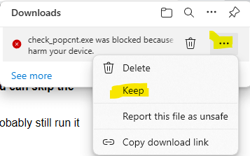If the download is blocked, you need to hover over the download and click on the three dots '...', you then need to click 'Keep'.
Using check_popcnt.exe
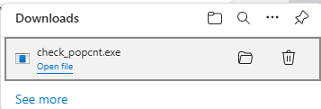Once you have downloaded the check_popcnt.exe program, you just need to open it, simply click 'Open file' from the download menu or navigate to the download location and open it from there.
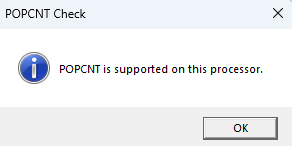When you run the check_popcnt.exe program you should see a message that reads 'POPCNT is supported on this processor', if you see a message that reads this and looks like the image above, you can install Windows 11 on your unsupported PC.
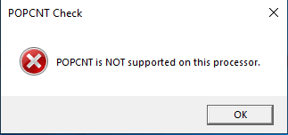If your PC has this message 'POPCNT is NOT supported on this processor', you will be unable to upgrade to the latest version of Windows 11 and you will no longer be receiving security updates on Windows 10 after 2025, in this instance I would consider replacing your PC within the next year to stay secure.
Installing Windows 11 on unsupported computer.
This step is only for those who have an unsupported computer that is capable of running Windows 11
There is a tool available to bypass the Windows 11 arbitrary system requirements on PCs that are capable of running Windows 11, the tool is called 'bypass_windows11_requirements.cmd', you can download it from the link below.
Download bypass_windows11_requirements.cmd 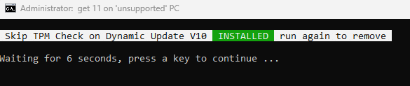The bypass_windows11_requirements.cmd tool is really easy to use, you just need to run it and it will automatically install 'Skip TPM Check on Dynamic Update V10' to your computer. If you see a screen like the one above, the bypass has been successfully installed onto your computer and you can proceed to the Downloading and Installing Windows 11 section.
If you saw a different message to the one that is demonstrated above, you will need to run the bypass_windows11_requirements.cmd again as the program works as an installer and uninstaller in one, this means that you run the program once and it will install the bypass, you run it a 2nd time and it will remove the patch, the 3rd time reinstalls the patch, etc.
Downloading and Installing Windows 11
Windows 11 is available as an upgrade from Windows 10, this means that all of your files and applications should carry over when you upgrade, the upgrade is free for both supported and unsupported PCs.
You can download the official version of Windows 11 from the official Microsoft website via the link below.
Visit Windows 11 Download Page. 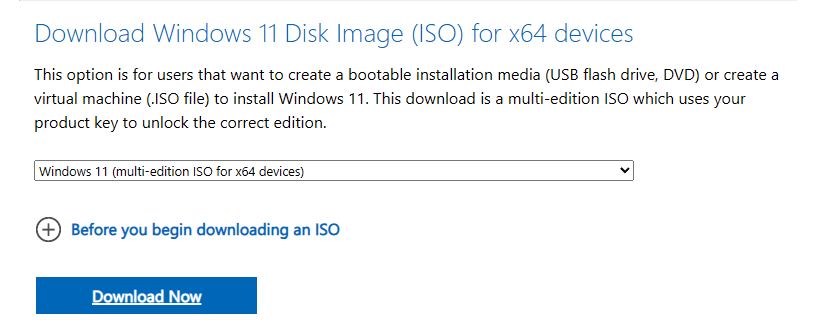Make sure you download from the third option down from the top, like in the image above, you then need to click the select download box.
Next you need to select the product language, this must be the same as your current Windows 10, follow the instructions given, then select the correct product language, then click 'Confirm'.
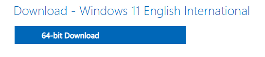Now you can download the Windows 11 ISO, this will take a while depending on your internet bandwidth as the file is roughly between 3-7GB in size. On an average you should expect it to take around 10-25 minutes to download.
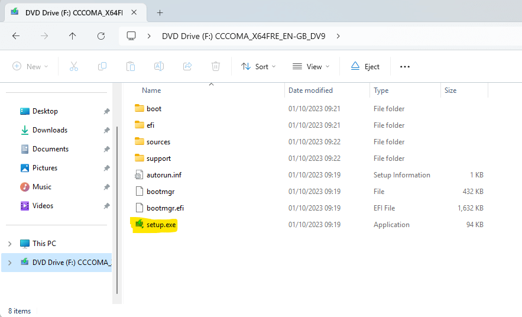When the ISO file has downloaded, you need to open it, this will open a virtual DVD, from within the virtual you need to double click on the 'setup.exe' file.
After opening the 'setup.exe' file, you should now see a screen that says 'Install Windows 11' or 'Install Windows Server', on this screen you need to click on 'Next'
If you are upgrading to Windows 11 on an unsupported PC, do not worry if it says 'Windows Server' instead of 'Windows 11', this is because the installer has been tricked into thinking it is installing Windows Server to bypass the arbitrary system requirements.
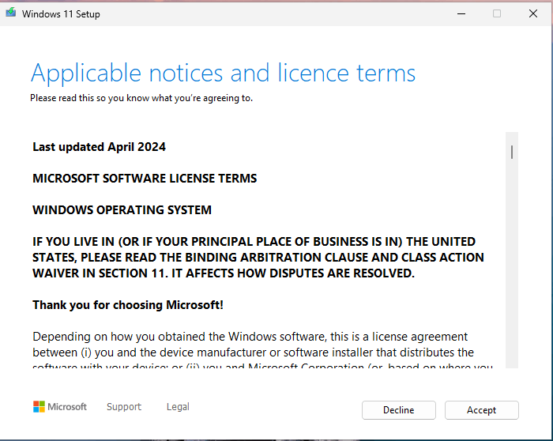Next, you need to read through the 'Applicable notices and licence terms', then click 'Accept' to continue.
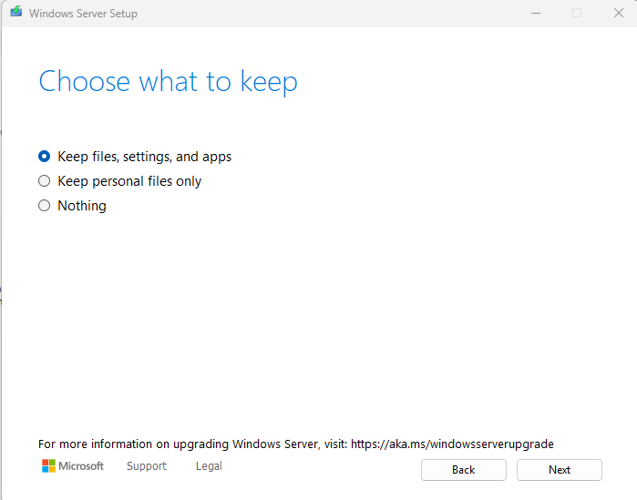If you are asked to 'Choose what to keep' make sure you select 'Keep files, settings, and apps', if you do not select this option all of your files might be deleted along with any applications you have installed. Click 'Next' to continue.
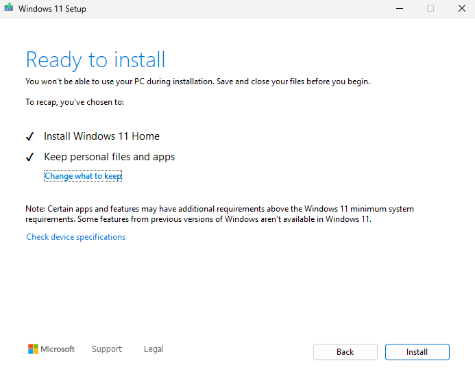At this point, you should see a screen that says 'Ready to install', now just click the 'Install' button and you will begin upgrading to Windows 11.
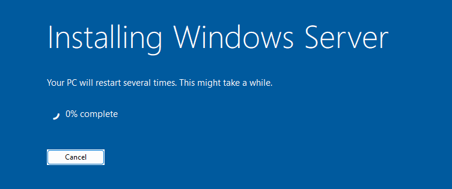If you see a screen that says 'Installing Windows Server' do not be alarmed, this is normal when upgrading to Windows 11 on an unsupported PC.
The upgrade to Windows 11 can take a very long time, especially if you have an older computer. The upgrade process can be as little as 10 minutes or take several hours to complete, just be patient and make sure that your device is plugged in and on charge.
What you need to do after upgrading to Windows 11
After your computer has finished upgrading to Windows 11, there are three things that I recommend you do:
- Check for Windows Updates
- Optimise your computer
- Debloat your computer
Checking for updates is really easy on Windows 11 as you just need to open the Settings app and navigate to 'Windows Update', alternatively you can use the link below to check for Windows updates.
Check for Windows updatesA guide on optimising your computer system is underway, until then you will just have to wait.
Debloating your computer system is a really straight forward process, you can learn about the benefits of debloating your computer system, and how you can do it by visiting my guide which is linked below.
Guide on Debloating Windows 11 24H2Page Updated: 30/05/2024
Page Author: Hackboto